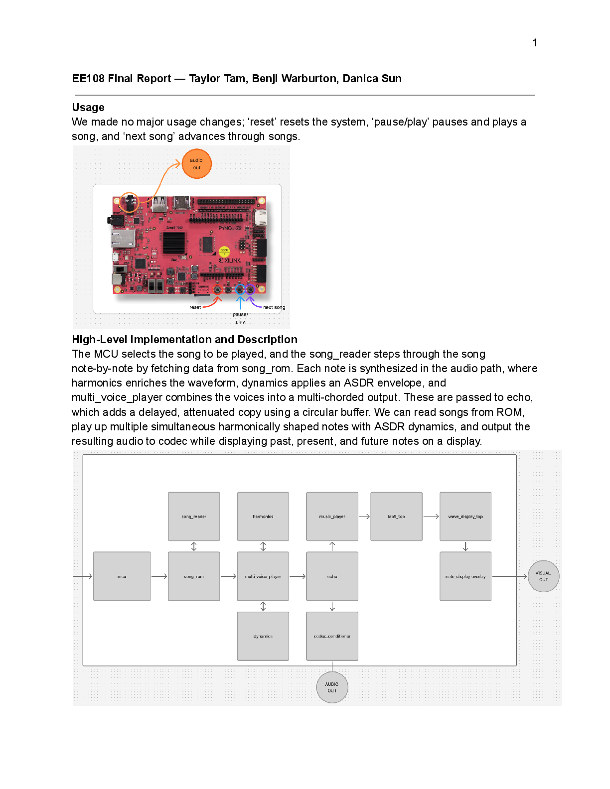
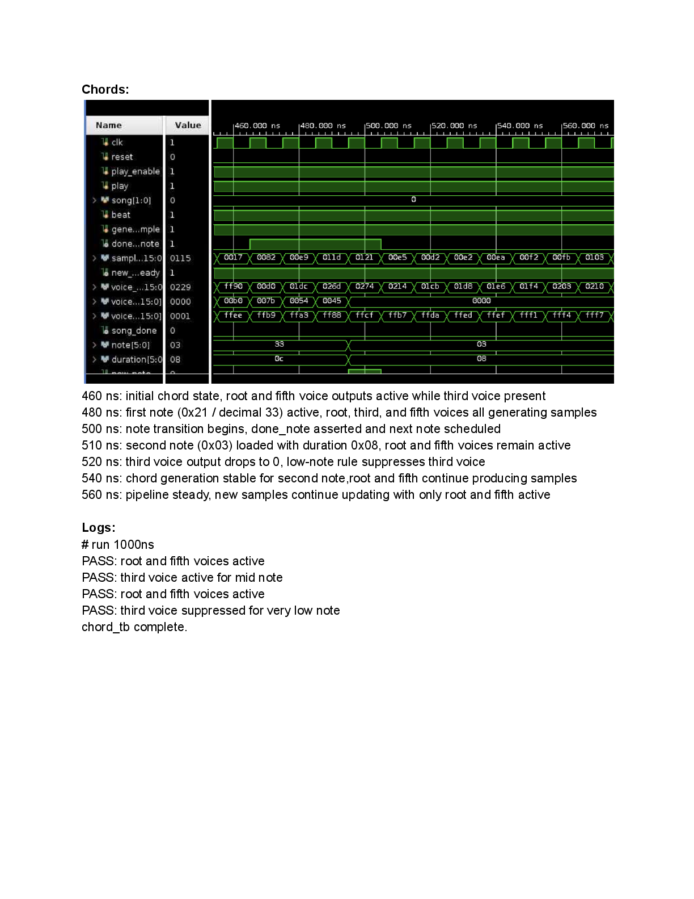

Built for Stanford EE108, this Verilog music player reads songs from ROM and synthesizes polyphonic audio with weighted harmonics, ADSR dynamics, echo, stereo panning, and a past/present/future note display.
At a Glance
- Course
- Stanford EE108 final project
- Team
- Taylor Tam, Benji Warburton, Danica Sun
- Core Features
- 3-voice chords, harmonics, ADSR, echo, stereo, note display
- Tools
- Verilog, Vivado, FPGA audio pipeline, VGA display logic
System Overview
The design is organized around a ROM-driven playback path. An MCU-side controller selects a song, song_reader steps through note data in song_rom, and the audio pipeline synthesizes each note before passing the result to the codec. In parallel, a VGA display path renders the recent notes, active notes, and upcoming notes so the interface mirrors the playback state.
Audio Pipeline
- Polyphonic chords: Three synchronized note-generation paths feed a
multi_voice_playermixer so the system can play full chords instead of single-note melodies. - Weighted harmonics: Fundamental, second, and third harmonic sine waves are mixed with different weights to shape timbre while avoiding overflow on lower notes.
- ADSR dynamics: The amplitude envelope advances on valid sample ticks rather than every system-clock edge, which keeps note articulation aligned with the audio stream.
- Echo: A circular delay buffer reads an older sample, attenuates it, and mixes it back with the dry signal for a delayed repeat.
- Stereo spread: The root stays centered while the third and fifth are panned left and right to widen the chord without losing the melody.

Verification
The testbench suite covered chord generation, harmonics, dynamics, echo, note display, and stereo effects. The submitted waveforms verify behaviors like third-voice suppression on very low notes, harmonic-region switching, sample-tick-driven envelope updates, signed echo saturation, and distinct left/right stereo outputs.
Timing and Design Tradeoffs
According to the final report, the 100 MHz logic, 25 MHz display, and 48 MHz codec domains each met intra-domain timing. Remaining violations were isolated to unsynchronized 100 MHz to 25 MHz crossings, which made clock-domain behavior the main systems risk rather than any single synthesis block. The project also forced careful overflow handling in the chord mixer and echo stage so parallel features did not degrade audio quality.
Why This Project Matters
This was a good end-to-end digital systems project: ROM control, signal synthesis, display logic, verification, and timing all had to work together. The most useful takeaway was learning to treat synchronization, sample timing, and interface consistency as part of the product itself, not as cleanup after the main functionality works.